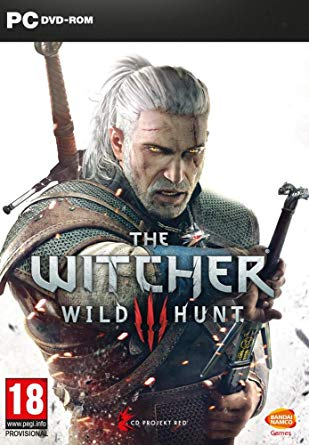

R$ 79,99

R$ 169,00

R$ 98,99
R$ 34,99

R$ 159,90
|  | The Witcher 3 R$ 79,99 |
The Witcher 3 é um jogo de RPG de mundo aberto de próxima geração baseado em história, ambientado em um universo de fantasia visualmente deslumbrante, cheio de escolhas significativas e consequências impactantes. Em The Witcher, você joga como Geralt de Rivia, um caçador de monstros com a tarefa de encontrar uma criança de uma antiga profecia. |
|
The Elder Scrolls V: Skyrim Special Edition R$ 169,00 |
Skyrim é um jogo de RPG que mantém a tradicional jogabilidade de mundo aberto encontrada na série The Elder Scrolls mas com novos lugares, ferramentas e habilidades para melhorar o senso de fantasia. |
|
Divinity: Original Sin II R$ 98,99 |
Divinity: Original Sin II é um RPG aonde o combate é baseado em turnos. Reúna seu time. Aprenda combates táticos e profundos. Junte-se a até 3 outros jogadores online - mas saiba disso, apenas um de vocês terá a chance de se tornar um Deus. |
| Vampire: The Masquerade – Bloodlines R$ 34,99 |
Vampire: The Masquerade-Bloodlines proporciona um novo tipo de experiência RPG - uma que mistura todos os elementos fundamentais de um RPG tradicional com riqueza gráfica, rapidez e combate brutal de um jogo de ação na primeira pessoa. | |
|
Dark Souls 3 R$ 159,90 |
Com as chamas a desvanecerem e o mundo em ruína, viaja até um universo com inimigos e cenários colossais. Os jogadores mergulharão num mundo de trevas com uma atmosfera épica através de uma jogabilidade mais rápida e um combate ainda mais intenso. Tanto os fãs como os novatos ficarão perdidos na jogabilidade emblemática desta série e no grafismo imersivo. Agora, apenas as cinzas restam... Prepara-te mais uma vez e abraçe as trevas! |